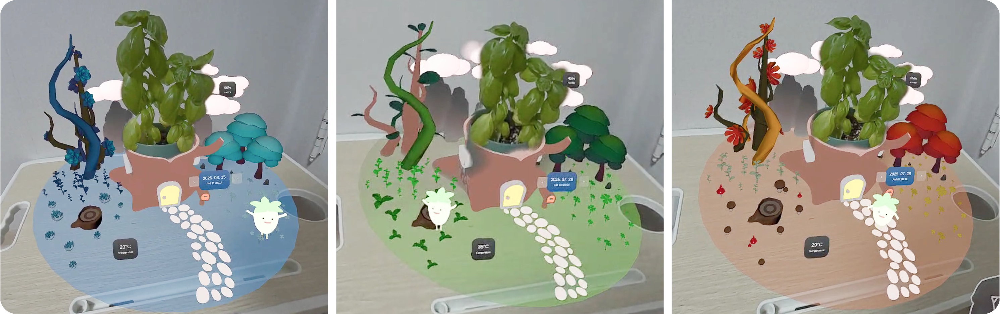
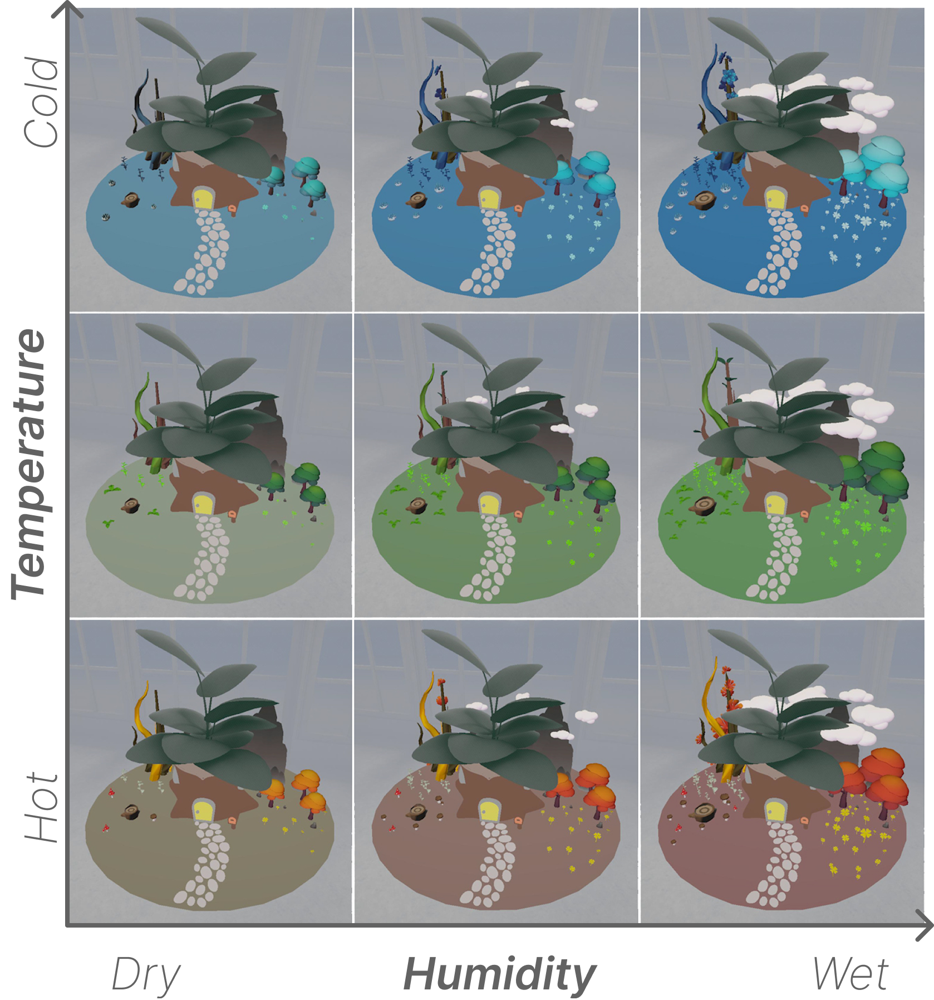
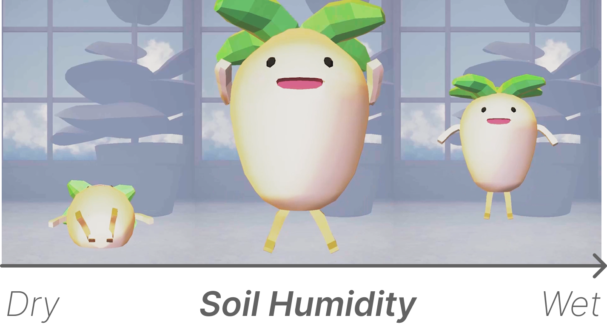
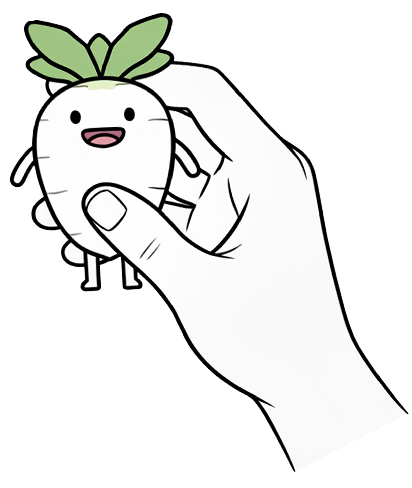

시스템 파이프라인

반려식물 데이터의 감성적 시각화 공간 위젯
서강대학교 아트&테크놀로지
이다영, 주진호
데이터 시각화를 넘어선 감성적 상호작용의 필요성
흙 속 수분 등 눈에 보이지 않는 식물의 상태는 초보 관리자가 직관적으로 파악하기 매우 어렵습니다.
단순히 수치화된 데이터만으로는 일상적인 관리 습관을 기르거나 정서적 유대감을 형성하는 데 명확한 한계가 존재합니다.
건조한 수치 데이터를 넘어선 감성적 피드백을 제공합니다.
단순한 정보의 전달을 뛰어넘어, 사용자와 가상 캐릭터 간의 깊은 정서적 교감과 유대감을 형성하는 것이 본 연구의 핵심 목표입니다.
IoT 센싱부터 혼합현실 내 사용자 경험까지의 데이터 흐름
화분의 토양 수분 및 온도 데이터 실시간 수집
NodeMCU를 통한 구글 시트 5분 주기 동기화
Meta Quest 3 기반 가상 테라리움 공간 렌더링
상태에 따른 시각적·행동적 감성 피드백 경험
테라리움 환경과 가상 캐릭터를 통한 직관적 상태 표현

테라리움 공간의 색상 그래디언트를 변경하여, 온도의 높고 낮음을 웜톤과 쿨톤으로 직관적으로 시각화합니다.

대기 습도 데이터에 비례하여 테라리움 내 구름의 양, 대기 밀도, 그리고 식물의 성장 정도를 조절합니다.

가장 핵심적인 지표입니다. 수분 부족 시 캐릭터가 떼를 쓰고, 충분 시 점프하는 등 생동감 있는 애니메이션을 출력합니다.
컨트롤러 없이 현실 공간과 매끄럽게 융합되는 MR 경험
가상 테라리움이 현실의 화분 위치에 정밀하게 중첩됩니다. Depth API를 적용하여 사용자 손이나 주변 가구에 의한 자연스러운 가림 처리를 구현했습니다.
별도의 컨트롤러 없이 Pinch & Grab 제스처를 사용하여 가상 캐릭터를 직접 잡거나 들어올릴 수 있어, 보다 깊은 정서적 물리적 교감을 유도합니다.
공간에 띄워진 우체통 형태의 UI를 찌르는 제스처를 통해 어제나 지난주 등 과거의 데이터 기록을 손쉽게 탐색할 수 있습니다.

단순 알림을 넘어선 지능형 감성 에이전트로의 진화
BotaniMate는 추상적인 수치 데이터를 직관적이고 감성적인 MR 위젯으로 변환하여, 사용자의 일상적 식물 관리 활동에 대한 지속적인 참여와 공감대를 성공적으로 이끌어냈습니다.
현재 시스템은 사전에 정의된 수치 임계값에 따라 단방향의 애니메이션 및 환경 변화를 출력하는 구조를 가지고 있습니다.
시계열 IoT 데이터 분석 및 사용자의 상호작용 이력을 결합하여, 실시간 상황을 스스로 인지하는 초개인화 대화를 생성할 계획입니다.
"지난주부터 계속 목이 말랐어요. 오늘 물을 주셔서 고마워요!"